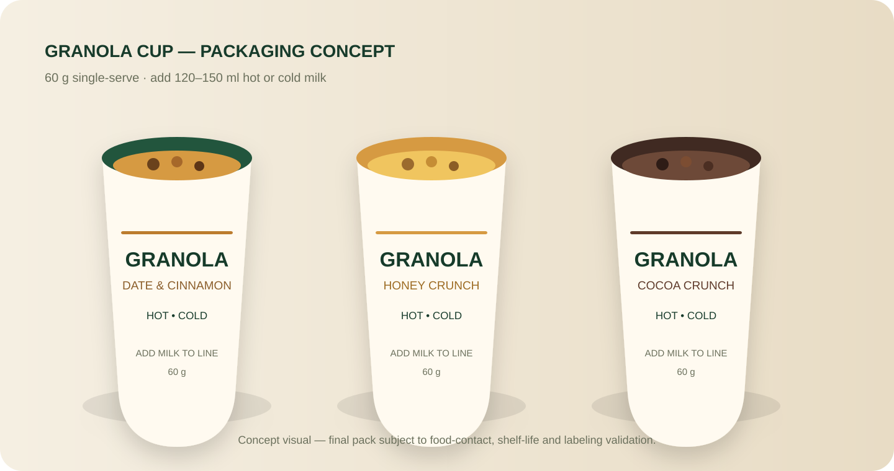
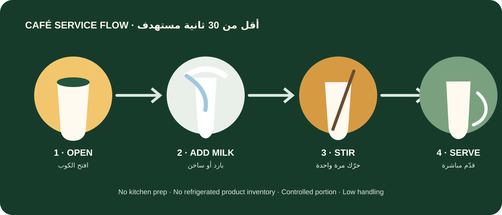
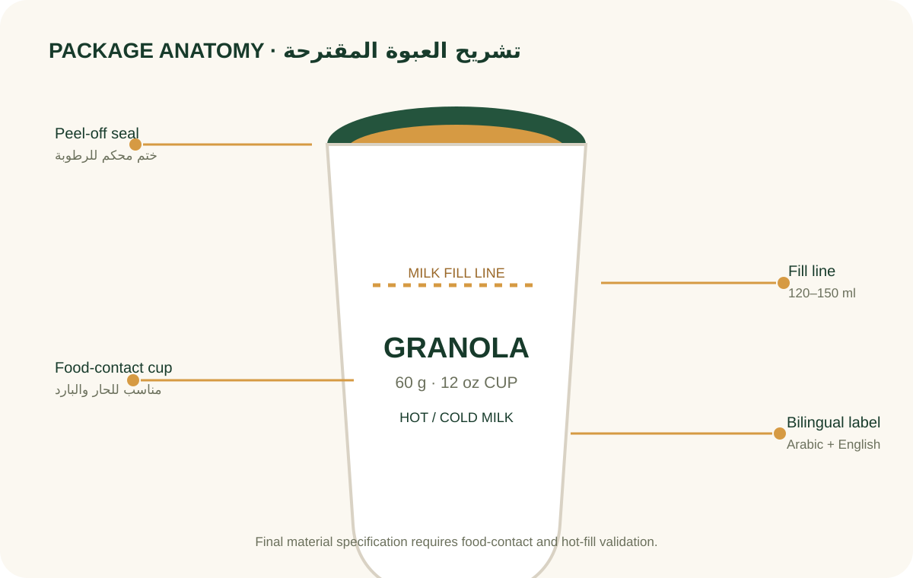

بدون سلسلة تبريد
الكوب جاف. الحليب من مخزون الكافيه الحالي.
كوب جاف أحادي الحصة يحتوي على 60 جم جرانولا. يضيف الباريستا 120–150 مل من الحليب البارد أو الساخن ويقدمه مباشرة. المنتج نفسه لا يحتاج سلسلة تبريد.

تصور تصميمي أولي — ليس عبوة نهائيةالميزة المقترحة: صنف جديد يمكن إضافته للقائمة بسرعة، بحصة ثابتة، وهدر منخفض، ومن دون تحضير مطبخي معقد.

الكوب جاف. الحليب من مخزون الكافيه الحالي.
فتح + حليب + تحريك + تقديم؛ هدف تشغيلي أقل من 30 ثانية.
60 جم كبداية، مع خط داخلي للحليب لتقليل تفاوت التحضير.
يمكن بدء التصنيع تعاقديًا ثم الانتقال لخط خاص بعد إثبات الطلب.
التصور المبدئي: 12 أونصة، إغلاق Peel-off مقاوم للرطوبة، خط تعبئة 120–150 مل، وطباعة ثنائية اللغة. يلزم اعتماد مادة ملامسة للغذاء مناسبة للحار والبارد قبل الإطلاق.

تمر وقرفة — النكهة المحلية الرئيسية.
Hero SKUعسل كلاسيك — خيار حيادي واسع القبول.
Core SKUكاكاو كرنش — خيار أقرب للحلى والشريحة الأصغر سنًا.
Youth SKUتقرير Euromonitor الصادر في مارس 2026 يصف نمو قطاع الكافيهات في 2025 بدعم من ثقافة القهوة المتخصصة وأنماط الحياة الحضرية، ويشير إلى قوة السلاسل وابتكار العروض المرتبطة بالصحة والراحة. هذه إشارة سوقية داعمة، لكنها لا تعوّض اختبار الطلب الخاص بالمنتج.
نمو القيمة في خدمات الطعام مدفوع بالمقاهي والوجبات السريعة وتجارب تناول الطعام.
السلاسل تملك قدرة أكبر على التوسع الموحد، التدريب، وإدراج SKU ثابت عبر عدة فروع.
المنتج يقع في تقاطع الإفطار السريع، الحصة الفردية، والخيارات الموجهة للعافية.
الأرقام التالية ليست عروض أسعار مورّدين. يجب استبدالها بعروض فعلية قبل قرار الاستثمار.
تكلفة مستهدفة 2.80 ر.س → مساهمة 1.95 ر.س → هامش إجمالي تقريبي 41%.
شامل VAT في المثال.
افتراض أولي للكافيه.
قبل المصروفات التشغيلية العامة.
40 cafés × 4/day
-8,640 SARتشغيلي شهري مفترض80 cafés × 7/day
+7,760 SARتشغيلي شهري مفترض150 cafés × 10/day
+42,750 SARتشغيلي شهري مفترضبوابة القرار: لا يُكتب «مناسب للحليب الساخن» على المنتج قبل اختبار الوصفة فعليًا على درجات حرارة الخدمة المستهدفة.
Recipe خاصة + اختبار 60–300 ثانية.
Food-contact + hot-use verification قبل الإنتاج.
Barrier seal + shelf-life validation.
صياغة واضحة + إدارة فصل المواد + إفصاح الكافيه.
Pilot 20 كافيهًا قبل MOQ كبير.
Prototype بسيط ثم طباعة صناعية بعد إثبات الطلب.
SFDA تشترط العربية، وإذا استُخدمت لغة أخرى فتكون بجانبها ومطابقة للبيانات العربية.
ترتبط العبوات بمتطلبات SFDA.FD/GSO 839 و1863، مع ضرورة التحقق من ملاءمة الاستخدام الساخن/البارد.
الإفصاح يمتد للمنشآت التي تقدم الطعام خارج المنزل ومنها المقاهي؛ الشوفان/الحليب/المكسرات بحسب الوصفة تحتاج إدارة دقيقة.
هذه مؤشرات إدارة داخلية مقترحة للمشروع وليست معايير تنظيمية.
المسار المفضل هو التصنيع التعاقدي في المرحلة الأولى. هذا يحول معظم رأس المال إلى تطوير المنتج، الاختبارات، العبوات، المخزون الأولي، والمبيعات بدل شراء خط إنتاج قبل إثبات السوق.
نطاق ما قبل الجدوى؛ يتغير حسب MOQ، الاختبارات، نوع العبوة، والتصنيع.
الجدوى المبدئية منطقية إذا نجح اختبار الحليب الساخن، بقيت تكلفة الكوب قرب المستوى المستهدف، وحقق الـPilot دورانًا وإعادة طلب كافيين. أكبر فجوات القرار الآن هي: عروض أسعار فعلية، اختبار صلاحية، تكلفة عبوة مطابقة، واختبار بيع حقيقي في 20 كافيهًا.
حدود الدراسة: لم تُجمع بعد عروض أسعار تصنيع أو تعبئة فعلية، ولم تُجرَ اختبارات حسية أو صلاحية، ولم يُنفذ Pilot. جميع الأرقام التشغيلية والمالية المحددة كتقديرات هي افتراضات ما قبل الجدوى وليست توقعات مؤكدة.